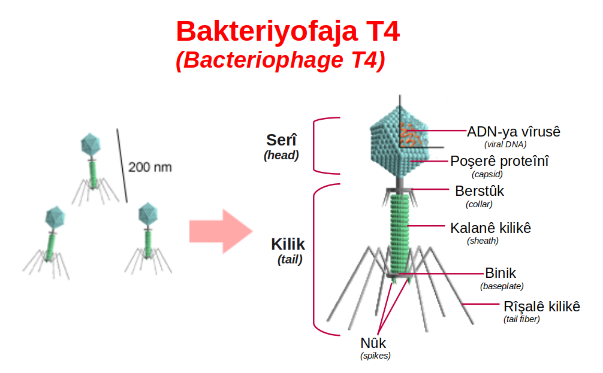

第 6 章
劫持的艺术
电子显微镜下的T4噬菌体，像一件设计得过于精密的武器。它的头部是一个二十面体的蛋白质外壳，里面塞着一条比它自身长一千倍的DNA分子。头部下方连接着尾管，尾管外包裹着可以收缩的尾鞘，

尾鞘基部伸出六根尾丝——这些尾丝在溶液中微微摆动，像深海水母的触须，但它们的任务不是捕食，而是识别。整个结构静止在载玻片上，一动不动，既不进行代谢，也不呼吸，也不消耗任何能量。它看起来更像一粒被精心打磨过的矿物晶体，而不是任何我们愿意称之为“活”的东西。
但把它放进一滴含有大肠杆菌的培养液里，一切就变了。这不是一个关于生命力的故事。它没有生命力。
它用的是另一种东西：逻辑。一种对细胞运行规则的深刻理解，一种被四十亿年演化打磨到极致的机械逻辑。
它的全部“生命”都始于一次成功的入侵——识别、穿透、关闭、征用、复制、组装、释放——每一个步骤，都对应着细胞精密运行逻辑中的一个深层漏洞。而我们要做的，就是跟随它，按侵入的时序，拆解这场分子层面的劫持。第一步是附着。
在微观世界的布朗运动中，噬菌体与细菌的相遇是随机的。它不游动，不寻找，不追踪——它只是被海水、黏液或培养液裹挟着，像一粒悬浮的尘埃，在永恒的分子撞击中随波逐流。
但一旦那六根尾丝中的任意一根触碰到大肠杆菌的表面，随机性就结束了。尾丝末端的蛋白质分子与细菌表面特定的受体——一种通常用于铁离子摄取的外膜蛋白——发生了精确的匹配。这不是一般的粘附，而是一种三维结构的互补，就像钥匙插入锁孔：只有特定形状的蛋白质凸起能嵌入特定形状的受体凹陷，氢键和范德华力在接触面上瞬间形成数十个微弱的化学键，每一个都微不足道，但合在一起，足以将噬菌体锚定在宿主表面。
这种特异性是劫持的第一道保险。一种噬菌体通常只识别一类或几类特定的受体，这意味着它只攻击一类或几类特定的宿主。T4噬菌体不会攻击人类细胞，不会攻击植物细胞，甚至不会攻击大多数其他细菌——它只攻击大肠杆菌，而且是带有特定表面蛋白的大肠杆菌。
这种狭窄的宿主范围并非缺陷，而是演化的必然结果：在病毒的世界里，错误的目标就是浪费的机会，而浪费机会的病毒基因，早已被自然选择从基因库中删除。那些尾丝蛋白结构发生随机突变、导致识别能力模糊的噬菌体个体，在亿万年的演化史中，它们的基因没有留下来。
但特异性也意味着脆弱。宿主细胞表面受体任何微小的改变——一次点突变导致的氨基酸替换，一个多糖侧链的缺失——都可能让噬菌体的钥匙无法插入锁孔。那些偶然获得这种改变的细菌，将在噬菌体的攻击下存活下来，繁殖下去，将抗性传给后代。劫持的第一道保险，同时也是宿主防御的第一道防线。我们稍后会看到，这道防线，以及病毒对它的破解，构成了一场持续四十亿年的军备竞赛的核心。
当尾丝蛋白与受体牢固结合，噬菌体便从漂泊状态锚定在宿主细胞表面。但这只是预备动作。真正的劫持尚未开始。
尾丝固定后，位于尾丝基部的尾板感知到这一结合信号——这并非化学信号传递，而是纯粹的力学传导：尾丝蛋白的构象改变牵动了与其相连的尾板蛋白，触发了一个不可逆的机械过程。尾鞘收缩。
要理解尾鞘收缩，你需要先理解尾鞘的结构。它由数百个相同的蛋白质亚基以螺旋方式排列而成，像一根被压缩的弹簧，处于一种亚稳态的高能量状态。所谓亚稳态，是指它目前是稳定的，但只要一个微小的触发，它就会释放出储存的能量，进入另一个更稳定的状态。
这种状态在生物学中并不常见——大多数生物结构都处于能量最低的稳定态，而不是这种蓄势待发的亚稳态。但病毒需要这种设计：它必须在细胞外保持静止，又必须在接触宿主的瞬间立即行动。亚稳态是它解决这个矛盾的方式——它一直等待着触发。
触发信号一到，尾鞘蛋白质亚基之间的相互作用发生剧烈重组。那些维持螺旋构象的氢键和疏水相互作用在瞬间断裂，又在新的位置重新形成，导致整个尾鞘从延展状态沿着尾部中轴收缩，像一根被释放的弹簧，但更精确，更不可逆。
这个构象变化不是渐进的，而是一个协同过程：一旦启动，所有亚基几乎同时完成转变，整个尾鞘在几毫秒内从二十四纳米长的延展构象收缩为十二纳米长的收缩构象。这个过程产生的力量，在分子尺度上是惊人的。单个尾鞘收缩可以产生约六十皮牛顿的力——听起来微不足道，但请记住，这是在纳米尺度上。六十皮牛顿，相当于将一根DNA分子拉长到其正常长度一点五倍所需的力量。按比例换算，这相当于一个微观注射器的活塞以超过分子马达数倍的功率密度向下推进。
尾鞘收缩的力量驱动尾管末端的刺突穿透细菌的外膜和细胞壁，然后在肽聚糖层上钻出一个孔洞。整个过程不需要ATP，不需要任何外部能量输入——所有能量都预先储存在尾鞘蛋白质的亚稳态构象中，在附着的瞬间一次性释放。
接下来发生的事情，定义了病毒的劫持逻辑与所有其他寄生方式之间的本质区别。噬菌体没有进入细胞。它的蛋白质外壳——那个漂亮的正二十面体头壳、那根精密的尾管、那套收缩的尾鞘、那六根识别的尾丝——全部留在了细胞外面。
它只把一样东西送进了细胞内部：DNA。一条长约五十微米的双链DNA分子，通过尾管中空的通道，穿过尾鞘收缩钻出的孔洞，被注入细菌的细胞质。整个注入过程不到一分钟。这一瞬间，一个在细胞外完全静止的颗粒，转化成了宿主细胞内部的程序性劫持指令。
现在，让我们暂停在这个节点上，想一想这个动作的真正含义。病毒没有进入细胞，它只注入了遗传信息。它不需要进入。它不需要把自己的蛋白质带进细胞，它不需要携带核糖体或酶或ATP或其他任何生命活动所需的分子机器。它把所有这些都留在了外面，就像一个伞兵把降落伞留在树梢，只带着指令降落在敌后。而这份指令，一旦进入细胞的分子环境，就立刻开始执行。
这种策略的优雅之处在于它的彻底性。病毒不试图在细胞外复制自己——它做不到，它没有代谢。它不试图与宿主细胞共存——它不需要，它不需要宿主持续存活。它只需要一个东西：控制权。而它获取控制权的方式，不是暴力，而是信息。
它注入的DNA携带的指令，会利用宿主自身的分子机器来完成剩下的一切。病毒不制造工具，它劫持工具。
病毒DNA一进入细胞质，第一波基因表达就启动了。这里需要解释一个关键的时间差：此时病毒DNA仍然是裸露的，还没有被包裹进任何保护结构，它完全暴露在细胞内部的防御系统面前——限制性内切酶正在巡逻，随时准备切割外源DNA。
但病毒不依赖任何保护。它依赖的是速度。在注入完成后的数十秒内，病毒的早期基因就开始利用宿主已有的RNA聚合酶进行转录。这些早期基因编码的蛋白质只有寥寥几种，但每一种都直指细胞生存的核心。
第一种蛋白质的任务是关闭宿主自身的DNA复制。它不是一个温和的抑制剂，而是一个彻底的破坏者：它识别细菌DNA复制起始位点的特定序列，与之结合，让宿主自己的基因组无法继续复制。第二种蛋白质走得更远——它直接降解细菌的染色体。一种病毒编码的核酸酶开始将宿主DNA切割成单个核苷酸，将细菌精心维护的遗传蓝图拆解成一堆散落的原料。
细菌用了数十亿年演化积累的基因信息，在几分钟内被拆成了字母。第三种蛋白质，也许是最关键的一种，修改了宿主RNA聚合酶的特异性。
细菌的RNA聚合酶原本只识别细菌自身的启动子序列——那些标记在基因上游的“请从此处开始转录”的信号。但病毒蛋白质与之结合后，改变了它的识别机制，让它转而优先识别病毒DNA上的启动子。宿主核糖体仍然在工作，仍然在忠实地将信使RNA翻译成蛋白质，但它们现在翻译的，几乎全部是病毒的指令。
这种修改的精确性令人惊异。病毒蛋白质不破坏RNA聚合酶——破坏它会让转录完全停止，病毒自己的基因也无法表达。它也不完全取代它——那需要病毒携带自己的聚合酶基因，浪费宝贵的基因组空间。它只是修改它，像一个黑客不摧毁操作系统而只是修改几行代码，让系统以为自己还在正常运行，实际上已经完全在为入侵者服务。
不到五分钟，一个曾经完整运行的细菌细胞，已经变成了一个只生产病毒组件的工厂。
它的染色体被降解成了核苷酸库，它的核糖体被征用为病毒蛋白的生产线，它的能量代谢系统仍然在运转——但生产的ATP现在被用于合成病毒的DNA和蛋白质。病毒没有杀死宿主细胞，它做的更高效：它劫持了宿主，让宿主活着，但为它工作。
接下来是中期阶段。病毒DNA开始复制。但这里的复制，不是我们通常理解的那种“一份模板产生一份拷贝”的复制。
病毒使用的是滚环复制，一种在效率上近乎疯狂的机制。要理解滚环复制，最好的类比是磁带。想象你有一卷磁带，上面录着一段信息。正常的复制就像把这段信息转录到另一盘磁带上，一次一份。
但滚环复制做的是：病毒DNA的一条链被切开一个缺口，露出一个自由的末端，然后DNA聚合酶从这个末端开始，以完整的环状链为模板，连续不断地合成新链。它不停止，不重新开始，就像把磁带放进连续转录模式，一圈一圈地转，连续出带，一次产生多个串联的基因组拷贝。
这些串联的长链——一个接一个的病毒基因组，首尾相连——随后会被病毒编码的另一种酶切割成单个基因组单位。这种复制方式的速度取决于一个简单的事实：聚合酶不需要反复从模板上脱离、重新寻找起始位点、重新启动合成。每一次脱离和重新启动都需要时间，需要能量，需要精确的序列识别。滚环复制绕过了所有这些步骤。它只需要一次启动，就可以持续工作，直到耗尽所有核苷酸原料。在理想条件下，一个病毒DNA分子可以在二十分钟内产生数百个拷贝。
然后晚期基因启动。晚期基因编码的是结构蛋白——那些将构成子代噬菌体颗粒的蛋白质组件。头壳蛋白、尾管蛋白、尾鞘蛋白、尾丝蛋白，每一种都被大量合成，在细胞质中积累。
但最令人惊异的不是这些蛋白质的合成，而是它们的组装。在细胞内部，病毒的头壳蛋白开始自发组装成空的蛋白质外壳——正二十面体，精确的几何结构，不需要任何模板或引导。
这种自组装是蛋白质序列本身蕴含的物理化学性质决定的：在合适的离子浓度和pH条件下，头壳蛋白亚基会自发地折叠成正确构象，然后通过非共价相互作用聚集成外壳。这不是生命力，不是意图，这是热力学——蛋白质在寻找最低能量状态，而正二十面体恰好是那种状态。同样的自组装过程也发生在尾管、尾鞘和尾丝上。各部件在细胞质中分别组装完成，然后待命。整个过程中，没有任何中央指挥，没有任何蓝图被参照，没有任何“意识”在协调——只有数十亿年的演化将精确的组装信息编码进了每一种蛋白质的氨基酸序列。
这里有一个深刻的物理原理在起作用。蛋白质折叠和组装不需要外部指导，因为指导已经内置于氨基酸序列本身。每一种蛋白质的序列决定了它在水中会如何折叠——疏水残基向内聚集避开水分，亲水残基向外与水分子形成氢键，带正电的残基与带负电的残基相互吸引，半胱氨酸之间形成二硫键锁定构象。这些物理化学作用力的总和，使得每一种蛋白质在给定条件下都只有一个最稳定的三维结构。
病毒利用了这个原理：它不需要编码组装机器，它只需要编码那些能够自发组装成正确结构的蛋白质序列。
接下来是最具戏剧性的一步：DNA包装。病毒编码的一种包装酶——一种分子马达——识别出已经被切割成单位长度的病毒基因组，抓住一端，开始将DNA分子泵入预先组装好的空头壳。
这个过程需要巨大的能量，因为DNA分子是带负电荷的，它的磷酸骨架在溶液中会自我排斥，像一根被压缩的弹簧。要将它塞进只有它自身长度千分之一的头壳，需要对抗这种静电排斥力，还需要克服DNA弯折时产生的弹性阻力。包装酶消耗ATP，像一台微型马达，将DNA一点一点地推入头壳。每包装一个碱基对，马达消耗约两个ATP分子——对于一个十七万碱基对的T4基因组来说，这意味着三十四万个ATP分子被消耗，仅仅是为了将DNA塞进头壳。
最终，当头壳被塞满时，内部压力达到了惊人的程度——约四十个大气压，相当于一瓶香槟酒瓶内压力的六倍。这个数字值得停下来想一想。
四十个大气压，意味着头壳内部的DNA分子承受着每平方厘米四十公斤的压力。在这个压力下，DNA被压缩到接近结晶的密度，但仍然保持着双螺旋结构。这个压力对于病毒来说不是副产品，而是储存的势能。稍后，当病毒需要释放其DNA时，这个压力会让DNA像从香槟瓶中喷出的酒液一样，瞬间射出。病毒不浪费任何东西——连包装过程中的物理应力都被转化为感染下一轮宿主时的初始推力。
DNA包装完成后，尾部组件——尾管、尾鞘、尾丝——在头壳上自动装配，完成整个噬菌体颗粒的组装。现在，细胞内已经塞满了数百个完整的、具有感染能力的子代噬菌体。它们安静地等待着。
最后一步是释放。一种晚期合成的病毒蛋白质——裂解酶——开始工作。它攻击细菌细胞壁的肽聚糖层，从内部打穿维持细胞结构完整的分子支架。肽聚糖是细菌细胞壁的骨架分子，由交替的糖链和交联的肽桥构成，像一层包裹在细胞外的分子盔甲。裂解酶精确地切割糖链和肽桥之间的化学键，在盔甲上打开缺口。
细胞壁一旦出现缺口，渗透压就会接管：细菌内部的渗透压远高于外部环境，水分子通过缺口涌入，细胞膨胀，最终破裂。数百个子代噬菌体从裂解的空壳中喷涌而出，被释放到周围环境中，每一个都装备着完整的尾丝、尾鞘和包装好的DNA，每一个都准备好开始新一轮的劫持。从附着到释放，整个周期不到三十分钟。三十分钟。
一个没有代谢、没有呼吸、没有消耗任何能量的颗粒，在正确的时间出现在正确的地点，然后将一个完整的活细胞转化为生产更多自己的工厂，在不到一顿饭的时间里，生产出数百个复制品，然后炸开宿主，在残骸中释放它们。现在，任何目睹这个过程的人，都会感受到一种冷酷的、近乎恐怖的美感。
但如果我们止步于这种美感，我们就错过了这个故事中真正重要的部分。让我们回到那个释放的瞬间。数百个子代噬菌体喷涌而出，扩散到周围环境中。它们寻找新的宿主，如果找到了，整个过程就会重复，感染就会以指数方式扩散——一个变成几百个，几百个变成几十万个，几十万个变成几亿个。
在液体培养中，这种指数增长可以在几小时内将一管浑浊的细菌培养液变成一管清澈的液体——清澈，是因为几乎所有的细菌都已经被裂解了，只剩下悬浮的病毒颗粒和细胞碎片。
但这里有一个关键的事实被掩盖在这场压倒性的胜利之下：并非所有细菌都会死。在任何一个足够大的细菌种群中，总会有一些个体因为偶然的突变而拥有不同的表面受体——那些噬菌体尾丝无法识别的受体。当噬菌体到来时，这些个体不会被感染。它们的同胞被裂解，它们自己存活下来。
在噬菌体感染之前，这些突变个体可能只是种群中的极少数，不占任何优势，甚至可能因为受体结构改变而在营养摄取效率上略逊于其他个体。
但感染过后，它们成为了唯一的幸存者。这些幸存者开始繁殖。它们分裂，将突变的受体基因传给后代。几代之后，整个种群都由具有抗性的个体组成。噬菌体现在面对的是一群它无法识别的宿主。劫持的艺术，在第一道关卡上，就失效了。但病毒不会就此罢休。在病毒种群中，同样存在着偶然的突变。
也许某个噬菌体个体的尾丝蛋白发生了微小的改变，让它能够识别新的受体结构。也许另一个噬菌体获得了能够降解细菌表面保护性多糖的酶。这些突变个体在抗性宿主面前获得了优势，它们开始繁殖，将新的识别能力传给后代。几代之后，病毒种群重新获得了感染能力。宿主再次突变。病毒再次适应。宿主再突变。病毒再适应。
这不是一次征服，而是一个持续四十亿年的回合。每一次成功的劫持，都在宿主种群中施加了强大的选择压力。那些偶然拥有防御能力的个体获得生存优势，扩散其基因，改变整个种群的基因库。而每一次成功的防御，又在病毒种群中施加了反向选择压力，迫使病毒演化出新的破解手段。劫持不是结局，劫持是引擎——是驱动双方不断协同演化的引擎。
在分子层面，T4噬菌体展示的每一种劫持技巧——钥匙与锁孔的特异性识别、注射器般的力学穿透、早期基因对宿主系统的精确关闭、滚环复制的高效生产、自组装的头壳与尾管、包装DNA时储存的势能、最后裂解释放的裂解酶——每一种都对应着宿主曾经演化出的防御机制的破解方案。而宿主曾经演化出的每一种防御机制——细胞表面受体的改变、限制性内切酶对外源DNA的切割、CRISPR系统对病毒序列的免疫记忆——又对应着病毒曾经施加的劫持压力。
我们看到的，不是一场战斗的最终结果，而是一场永不停歇的舞蹈中某一个瞬间的画面。那些新释放的噬菌体，在溶液中扩散，寻找下一个宿主。
它们的尾丝摆动，它们的尾鞘蓄势待发，它们的头壳中塞满了高压的DNA。它们不知道，它们正在寻找的宿主，已经不再是上一轮感染发生时的宿主了。而在那些宿主细胞的基因组中，新的防御机制正在被转录，新的受体结构正在被翻译，新的抵抗策略正在被演化打磨。劫持的艺术，是这场舞蹈中攻方的那一半舞步。另一半，正在宿主细胞中酝酿。